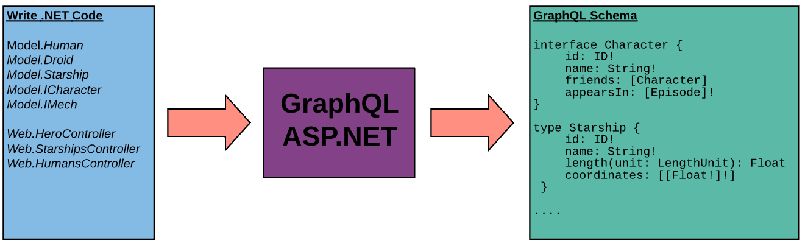

How it Works
This document is a high level overview how GraphQL ASP.NET ultimately generates a response to a query with some insight into core details. Its assumes a working knowledge of both ASP.NET MVC and GraphQL. If you are only interested in the "how to" for using the library, feel free to skip this.
Schema Generation

Object Templating
When your application starts the runtime begins by inspecting the registered ISchema types in your Startup.cs for the different options you've declared and sets off gathering a collection of the possible graph types that may be required.
For each type, it generates a template that describes how you've asked GraphQL to use your classes. By inspecting declared attributes and the System.Type metadata it generates the appropriate metadata to create everything GraphQL ASP.NET will need to fulfill a query. Information such as input and output parameters for methods, property types, custom type naming, implemented interfaces, union declarations, field path definitions, validation requirements and enforced authorization policies are all gathered and stored at the application level under the configured IGraphTypeTemplateProvider.
From this collection of metadata, GraphQL then generates the appropriate IGraphType objects for each of your schemas based on their individual configurations. By default, this completed ISchema instance is stored as a singleton in your DI container. There shouldn't be a need to change this but if your use case demands it you can perform a custom schema registration and generate a new schema instance per request/operation.
How does it know what objects to include?
GraphQL ASP.NET has a few methods of determining what objects to include in your schema. By default, it will inspect your application (the entry assembly) for any public GraphController classes and work from there. It checks every tagged query and mutation method, looks at every return value and every method parameter to find relevant scalars, enums and object types then inspects each one in turn to create a full map. It will even inspect the arbitrary interfaces implemented on each of your consumed objects. If that interface is ever used as a return type on an action method or a property, its automatically promoted to a graph type and included in the schema.
You have complete control of what to include. Be that including additional assemblies, preventing the inclusion of the startup assembly, manually specifying each model class and controller etc. Attributes exist such as [GraphSkip] to exclude certain properties, methods or entire classes and limit the scope of the inclusion. On the other side of the fence, you can configure it to only accept classes with an explicitly declared [GraphType] attribute, ignoring everything else. And for the most control, disable everything and manually call .AddGraphType<T>() at startup for each class you want to have in your schema (controllers included). GraphQL will then happily generate declaration errors when it can't find a reference declared in your controllers. This can be an effective technique in spotting data leaks or rogue methods that slipped through a code review. Configure a unit test to generate a schema with different inclusion rules per environment and you now have an automatic CI/CD check in place to give your developers more freedom to write code during a sprint and only have to worry about configurations when submitting a PR.
You can even go so far as to add a class to the schema but prevent its publication in introspection queries which can provide some helpful obfuscation. Alternatively, just disable introspection queries altogether. While this does cause client tooling to complain endlessly and makes front-end development much harder; if you and a private 3rd party can agree ahead of time on the query syntax then there is no issue.
Middleware Pipelines
Similar to how ASP.NET MVC utilizes a middleware pipeline to fulfill an HTTP request, GraphQL follows suit to fulfill a graphQL request. Major tasks like validation, parsing, field resolution and result packaging are just middleware components added to a chain of tasks and executed to complete the operation.
At the same time as its constructing your schema, GraphQL sets up the 3 primary pipelines and store them in the DI container as an ISchemaPipeline<TSchema, TContext>. Each pipeline can be extended, reworked or completely replaced as needed for your use case.
Query Execution
Query execution is performed in a phased approach. For the sake of brevity we've left out the HTTP request steps required to invoke the GraphQL runtime but you can inspect the DefaultGraphQLHttpProcessor to read through the code.
Phase 1: Parsing & Validation
// C# Controller
public class HeroController : GraphController
{
[QueryRoot("hero")]
public Human RetrieveHero(Episode episode)
{
if(episode == Episode.Empire)
{
return new Human()
{
Id = 1000,
Name = "Han Solo",
HomePlanet = "Corellia",
}
}
else
{
return new Human()
{
Id = 1001,
Name = "Luke SkyWalker",
HomePlanet = "Tatooine",
}
}
}
}
// GraphQL Query Document
query {
hero(episode: EMPIRE) {
name
homePlanet
}
}
// Generated Response
{
"data" : {
"hero": {
"name" : "Han Solo",
"homePlanet" : "Corellia"
}
}
}
Sample query used as a reference example in this section
The supplied query document (top right in the example) is ran through a compilation cycle to generate an IGraphQueryPlan. It is first lexed into a series of tokens representing the various parts; things like curly braces, colons, strings etc. Then it parses those tokens into a collection of SyntaxNodes (an Abstract Syntax Tree) representing concepts like FieldNode, InputValueNode, and OperationTypeNode following the graphql specification rules for source text documents.
Once parsed, the runtime will execute its internal rules engine against the generated ISyntaxTree, using the targeted ISchema, to create a query plan where it marries the AST with concrete structures such as controllers, action methods and POCOs. It is at this stage where the hero field in the example is matched to the HeroController with its appropriate IGraphFieldResolver to invoke the RetrieveHero method.
While generating a query plan the rules engine will do its best to complete an analysis of the entire document and return to the requestor every error it finds. Depending on the errors though, it may or may not be able to catch them all. For instance, a syntax error, like a missing }, will preclude generating a query plan so errors centered around invalid field names or a type expression mismatch won't be caught until the syntax error is fixed (just like any other compiler).
Performance Note: The parser uses
Span<T>andMemory<T>to analyze a document and carries those references for as long as possible, through much of the query plan generation; greatly reducing string allocations and providing a significant performance boost.
Phase 2: Execution
The engine now has a completed query plan that describes:
- The named operations declared in the document (or the anonymous operation in the example above)
- The top level fields and every child field for each operation
Its successfully validated that:
- All the referenced fields for the graph types exist and are valid where requested
- Required input arguments have been supplied and their data is "resolvable"
- This just means that we've validated that a number is a number, arguments on input objects exist etc.
The specifics provided by the client are now brought into play and the runtime will select the correct operation, validate any provided variable values against the operation's declarations and select the first set of fields to execute.
For each field, the runtime will:
- Substitute any deferred input arguments with referenced variable data
- Generate a field execution context containing the necessary data about the source data, arguments and resolver.
- Authenticate the user to the field.
- Execute the resolver to fetch a data value.
- Invoke any child fields requested.
Resolving a Field
GraphQL use the phrase "resolver" to describe a method that, for a given field, takes in parameters and generates a result.
At startup, GraphQL ASP.NET automatically creates resolver references for your controller methods, POCO properties and tagged POCO methods. These are nothing more than delegates for method invocations; for properties it uses the getter registered with PropertyInfo.
Performance Note: The library makes heavy use of Lambdas generated from compiled Expression Trees to call its resolvers and for instantiating input objects when generating a field request. As a result, its many orders of magnitude faster than baseline reflected calls and nearly as performant as precompiled code.
Concerning the N+1 Problem
If you're reading this document you're probably aware of the N+1 problem and the concept of Data Loaders as they relate to GraphQL. The section in this documentation on batch operations covers it in detail, but suffice it to say this library can handle 1:1, 1:N and N:N relationships with no trouble. These are implemented as type extensions through controller methods.
Lets use a scenario where we query a set of managers and for each manager, their employees; setting up a 1:N concern. Using a [BatchTypeExtension] we can query all the needed children at once then split them out to the individual managers.
// Assume that in this query the fields for
// "managers" and "employees" both return an array of people
query {
managers(lastNameLike: "Sm*") {
id
name
employees {
id
name
title
}
}
}
Your controller might look like this:
// C# Controller
public class ManagersController : GraphController
{
// constructor with service injection omitted
[QueryRoot("managers")]
public async Task<IEnumerable<Manager>> RetrieveManagers(string lastNameLike)
{
return await _service.SearchManagers(lastNameLike);
}
// Declare a new field that:
// *Extends the Manager type
// *Is called "employees"
// *Returns a collection of employees per manager: IEnumerable<Employee>
[BatchTypeExtension(typeof(Manager), "employees", typeof(IEnumerable<Employee>))]
public async Task<IGraphActionResult> RetrieveEmployees(IEnumerable<Manager> managers)
{
// the managers parameter here represents the entire collection of managers
// previously retrieved on this request, it is not part of the "employees"
// field definition. The runtime works this out automatically
// and the parameter is not exposed on the object graph.
IEnumerable<Employee> employees = await _service
.RetrieveEmployeesByManager(managers.Select(mgr => mgr.Id));
// We have to tell GraphQL how to map the data for each manager.
//
// StartBatch() is a convience method that builds
// an IDictionary<TSource, IEnumerable<TResult>>
return this.StartBatch()
.FromSource(managers, mgr => mgr.Id)
.WithResults(employees, emp => emp.ManagerId)
.Complete();
}
}
Phase 3: Response Generation
Once all fields have been processed the runtime makes a final pass to propagate any nullability errors up the field chain resulting in a final data set. This data set is then passed to the IGraphResponseWriter registered for the schema and the result is serialized to the HttpResponse.
Writing a response includes:
Serializing the
errorsgenerated during execution- All error messages have a severity level. Your schema configuration controls which are sent to the client.
- You can add your own error messages through your controller actions by returning
this.Error(). - Error messages may or may not have associated exception data which may or may not be exposed to the client depending on who they are or the schema configuration settings.
Serializing the
datafield to the response streamSerializing the
extensionsfield (such as metrics data) to the response stream
Other Points of Interest
Hopefully we've given you a bit of insight into how the library works under the hood. The other documents on this site go into exhaustive detail of the different features and how to use them but since you're here:
- The library targets
netstandard2.0.- Out of the box there are no external dependencies beyond official Microsoft packages.
Every core component and all middleware components required to complete the tasks outlined in this document are referenced through dependency injection. Any one of them (or all of them) can be overridden and extended to do whatever you want as long as you register them prior to calling
.AddGraphQL()at startup.- Inject your own
IGraphResponseWriterto serialize your results to XML or CSV. - Build your own
IOperationComplexityCalculatorto intercept and alter how a query plan generates its complexity values to be more suitable to your needs.
- Inject your own